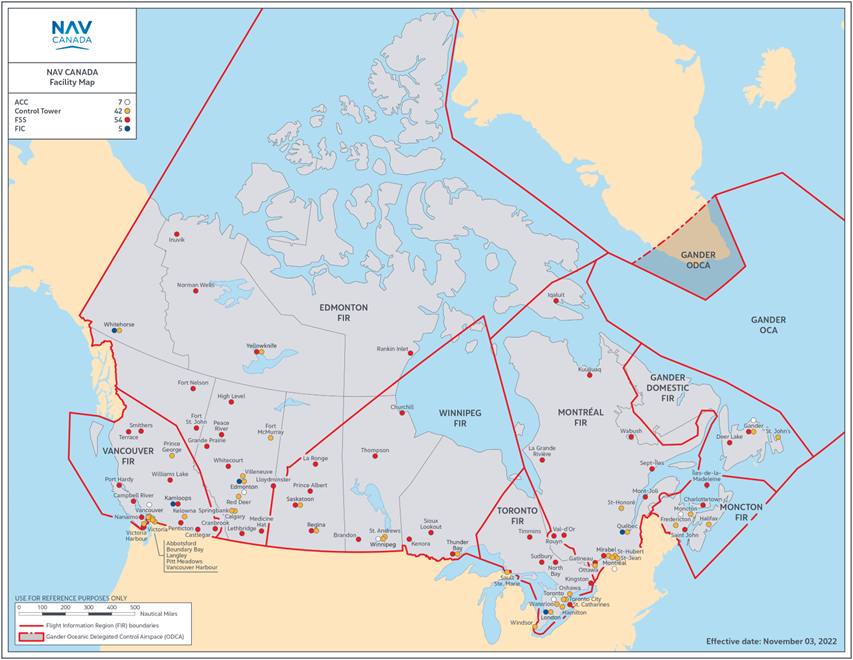
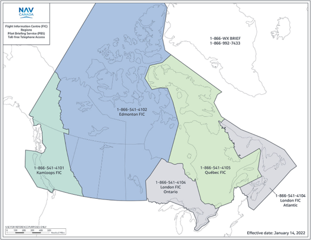

In controlled airspace, contact the affected air traffic services (ATS) unit at the emergency number on your flight authorization report.
In uncontrolled airspace, if your drone enters or is likely to enter into a control zone during ATS unit hours, contact the affected ATS unit.
If your drone enters or is likely to enter Class F Special Use Restricted Airspace, Class E controlled airspace, or a Class E control zone after ATS unit hours, contact the appropriate emergency phone number for your Flight Information Region as listed here.
| FIR | Air Traffic Services (ATS) | Phone |
|---|---|---|
| 1 | Gander Flight Information Region | (709) 651-5207 |
| 2 | Moncton Flight Information Region | (506) 867-7173 |
| 3 | Montreal Flight Information Region | (514) 633-3365 |
| 4 | Toronto Flight Information Region | (905) 676-4509 |
| 5 | Winnipeg Flight Information Region | (204) 983-8338 |
| 6 | Edmonton Flight Information Region | (780) 890-8397 |
| 7 | Vancouver Flight Information Region | (604) 586-4500 |

https://tc.canada.ca/en/aviation/aviation-accidents-investigations/emergencies-incident-reporting
If you need to report an emergency (imminent and immediate threat to aviation and public safety), please call the 24/7 Emergency Number: 1-877-992-6853 or visit Transport Canada on the web.